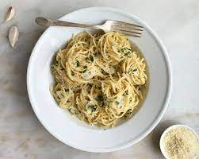

Aglio e Olio

A true example of cucina povera
Spaghetti aglio e olio is a traditional Italian pasta dish from Naples.
It is a typical dish of Neapolitan cuisine and is widely popular.
It’s popularity can be attributed to it being simple to prepare
and the fact that it makes use of inexpensive, readily-available
ingredients that have long shelf lives in a pantry.
Ingredients
- 4 cloves of garlic
- 4 dried chillis
- good quality olive oil
- spaghetti
- parmesan cheese
- salt and pepper to taste
Steps
- Cook the spaghetti as per the packet instructions. Make sure
the water is well seasoned.
- Finely slice the garlic and add to the pan with the chilli and
a good few lugs of oil.
- Once the garlic has become aromatic, add the cooked spaghetti
and 1/2 a cup of the reserved pasta water.
- Shake and stir the pan so that the water and the oil form a
luscious emulsion.
- Serve with freshly grated parmesan cheese, salt and pepper to taste
and a drizzle of good quality olive oil.
Home